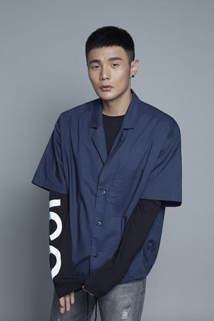

李荣浩
个人简介
李荣浩（Ronghao
Li），1985年7月11日出生于安徽省蚌埠市，中国流行乐男歌手、词曲创作人、音乐制作人、演员。
重要事件
- 2010年，发行首张个人音乐EP《小黄》。
-
2013年，发行个人首张音乐专辑《模特》，凭该专辑成为首位获得“台湾金曲奖最佳新人奖”的中国大陆歌手。
-
2014年，发行个人同名音乐专辑《李荣浩》，凭该专辑获得中国TOP排行榜内地年度最佳男歌手奖。
-
2016年，发行个人音乐专辑《有理想》。随后，举行的23场“有理想”世界巡演获得第21届华语榜中榜亚洲影响力最佳演唱会奖。
-
2017年，发行个人音乐专辑《嗯》，凭该专辑获得第22届全球华语榜中榜亚洲影响力最佳男歌手奖；同年，他的个人巡演首次登陆香港红磡体育馆和台北小巨蛋体育馆。
-
2018年，发行个人音乐专辑《耳朵》，凭该专辑提名第30届台湾金曲奖最佳国语男歌手奖。
-
2019年，担任浙江卫视歌唱选秀节目《中国好声音》的导师；同年，获得Mnet亚洲音乐大奖亚洲最佳艺人奖。
获奖记录
- 2019Mnet亚洲音乐大奖：最佳亚洲艺人奖
-
2019华人歌曲音乐盛典：年度金曲奖《年少有为》、年度最佳作词奖《年少有为》
- 第3届唱工委音乐奖：最佳作曲奖《年少有为》
- 第30届台湾金曲奖：最佳国语男歌手奖、最佳作曲人奖《慢慢喜欢你》
-
2018年度Hito流行音乐奖：Hito男歌手奖、入榜最久歌手奖、年度十大华语歌曲《年少有为》
- 第41届十大中文金曲：优秀流行国语歌曲奖（铜奖）《张家明和婉君》
- 第15届MAHB年度先生盛典：年度男歌手奖
- 2018华人歌曲音乐盛典：全媒体推荐年度男歌手奖
- 第2届唱工委音乐奖：最佳流行专辑奖《嗯》
- 2017年度Hito流行音乐奖：年度十大华语歌曲奖《就这样》
-
第22届华语榜中榜：亚洲影响力最佳男歌手奖、亚洲影响力最受欢迎专辑奖《嗯》
- 第8届全球流行音乐金榜：年度最佳男歌手奖、年度传媒推崇制作人奖
-
第11届音乐盛典咪咕汇：年度内地最受欢迎男歌手奖、年度十大金曲奖《嗯》
-
2017腾讯视频星光大赏：年度男歌手奖 第14届MAHB年度先生盛典：年度先生奖
- MTV全球华语音乐盛典：最佳人气歌手奖、最佳专辑制作人奖《有理想》
主要专辑
| 专辑名 |
年份 |
| 麻雀 |
2019 |
| 耳朵 |
2018 |
| 嗯 |
2018 |
| 有理想 |
2017 |
| 模特 |
2016 |
| 小黄 |
2010 |
生活照

社会活动
2010年9月，推出为流浪狗特别创作的歌曲《小黄》，并携手北京市保护小动物协会将该曲作为保护流浪小动物的指定公益宣传歌曲，呼吁和提倡为流浪小动物
募集善款用以支持它们基本的温饱和绝育手术费用。2014年7月，参加由周迅发起的“关爱特殊儿童One
Night公益晚会”，演唱歌曲《模特》《作曲家》
和《李白》。该演出的营利所得捐赠给公益基金，让偏远山区的儿童能够免费观看电影。
2015年7月，参加由周迅、高圣远夫妇发起的“关爱自闭症儿童公益晚会OneNight公益晚会”，该演出的营利所得捐赠壹基金海洋天堂计划，以帮助自闭症孩子融
入社会。Fm联播网号召的“毛起来爱”关怀流浪动物活动，推广爱护动物理念、传递正确领养及饲养观念，与杨丞琳共同推出两千礼盒进行义卖，
营利所得全额捐赠给“台湾动物紧急救援小组”。12月，参加“希望盒子”公益项目，呼吁大众关注教育扶贫。2019年4月，李荣浩的蜡像入驻北京
杜莎夫人蜡像馆梦想音乐会展区。
2020年2月，发行抗击新型肺炎疫情原创歌曲《同根》，向一线医护人员致敬，鼓励大众团结一致。